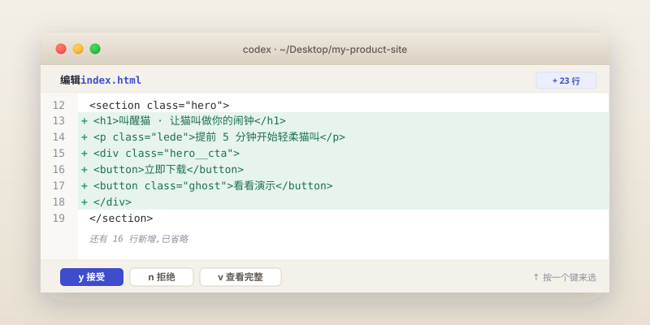

搭出产品官网骨架
这一章我们正式开工。你即将看着 Codex 把你嘴里说的"我想做一个产品官网"变成一个真的 HTML 文件,然后在浏览器里打开它。我们不追求一次到位,而是分五段一步步加东西——这也是真实做产品的方式。
index.html 文件,在浏览器里打开能看到一个产品官网,包含五段:首屏(Hero)、卖点、核心功能、定价、联系表单。手机和电脑都能正常显示。耗时约 60–90 分钟。
没关系。本章我们假设你正在做一个虚构的小产品 叫醒猫——一个早晨准时叫你起床的 App。你可以全程跟着这个虚构例子做,也可以把"叫醒猫"换成你自己心里那个想法,把每条提示词里的产品名和描述替换掉即可。两种走法都行。
第一步 · 准备工作
打开终端,cd 到我们在第 02 章建好的 my-product-site 文件夹,然后启动 Codex:
cd ~/Desktop/my-product-site codex
看到那个熟悉的对话输入框出现后,深呼吸,我们要开始造东西了。
第二步 · 让 Codex 出第一版首屏
关键技巧:第一轮提示词不要给 Codex 太多约束。你先把脑子里的产品三句话讲清楚,让它先做一个能跑的版本,我们再迭代。
按回车发出去。Codex 会先给你一份"我打算这么做"的计划,把 5 个区块列出来征求你同意。看一遍,如果觉得合理,按 y / 选 Yes 让它开干。
它会开始写 index.html。屏幕上会出现一个 diff 视图(差异视图),意思是"我即将把这些内容加到/改到文件里",大致长这样:

index.html 为标题的代码块,左侧有绿色的 + 号,表示新增的行。下方有"接受/拒绝/查看"按钮。看一眼内容,不需要完全看懂(我们这本书的核心就是你不必看懂代码细节),只要确认它没有改你不希望它改的东西即可。按"接受"。
第三步 · 在浏览器里看效果
文件已经写好了,我们要打开它看一眼。有两种方法,选你顺手的:
方法 A · 直接双击
打开文件管理器,找到桌面上 my-product-site 文件夹里的 index.html,双击它。浏览器会打开它。
这是最快的方法。缺点是地址栏开头是 file:// 而不是 http://,有些功能(比如表单提交、字体加载)在真实的服务器环境下才能完美工作。但对我们这一章足够。
方法 B · 让 Codex 启动一个本地预览服务器
如果你想要更接近"真实网站"的预览,可以让 Codex 帮你跑一个本地服务器。回到 Codex 对话:
python3 -m http.server 这种内置工具帮你起一个本地服务,通常监听 8000 端口。你只需要把它告诉你的地址(比如 http://localhost:8000)粘到浏览器即可。无论你用方法 A 还是 B,现在你应该在浏览器里看到了一个像样的产品官网雏形。
从一句话需求("叫醒猫官网")到浏览器里能看到的页面,你大概花了不到 5 分钟,而且没有写过一行 HTML 代码。这就是口语化编程在 2026 年的真实速度。先把这个时刻记住,后面遇到挫折时可以回来看一眼。
第四步 · 迭代:把不顺眼的地方说出来
第一版基本不会让你满意。比如:
- 颜色太普通
- 那三个卖点写的内容是 Codex 瞎编的
- 按钮位置不太对
- 手机上看好像太挤了
关键技巧:每次只改一件事。 一次把五个问题塞给 Codex,它很可能改得稀里哗啦,你最后又得回退。
迭代 1:换文案
迭代 2:换配色
颜色的口语化描述有个小窍门:描述感觉,而不是给具体色号。Codex 会自己选合适的搭配。
迭代 3:加入定价的实际内容
迭代 4:让手机上也好看
第五步 · 第一次 Git 提交(很重要)
当你迭代到一个自己比较满意的版本,立刻做一次 Git 提交。Git 是什么?把它想成你写论文时不停按 Ctrl+S 的那个动作,只不过它每按一次会问你"这次改了啥"。这件事的好处:
- 之后 Codex 不小心改坏了什么,你可以一键回退到这个版本
- 你的代码进了一个时光机,任何一个历史版本都能回去看
- 到了第 08 章上线时,我们就是把 Git 历史推到 GitHub 上去
git init)只需要做一次。之后每次想保存一个里程碑,你只需要说"帮我提交一次,信息写 XX"即可。Codex 会执行 git init、git add .、git commit -m "..." 这一连串操作,然后告诉你做完了。从现在起,你的项目有了"保存点"。
动手试试
现在你已经看过一遍五段式产品官网的搭建过程。试着用同样的方法,把它替换成你自己心里那个想做的产品。你可以给 Codex 这样开场:
- 替换好之后,在浏览器里完整滚动一遍页面
- 挑出 2-3 个最不满意的地方,逐个跟 Codex 说"请改成 XX"
- 最后做一次 Git 提交,信息写"换成 [你的产品名] 第一版"
常见踩坑
Codex 一次改了 6 个地方,我只想改 1 个
- 现象
- 你只说改一处,但 diff 视图里出现了你没想到的额外改动。
- 原因
- 它"顺手"做了它认为相关的优化。这种情况很常见。
- 解决
- 不接受 diff,直接说"请只改 XX,其他保持不变,重新做一次"。或者接受后用一句话回退:"刚才的改动,请只保留 XX 那一部分,其他撤回到改之前。"
页面打开是一片白
- 现象
- 双击
index.html后浏览器是全白的。 - 原因
- 大概率是 HTML 文件结构被某次改动改坏了,某个
<style>或<div>闭合错位。 - 解决
- 回到 Codex 说:"现在浏览器打开 index.html 是一片白,请检查 HTML 结构是否完整。"它会自己 grep / read 文件然后修复。如果还不行,用
git checkout index.html回退到上一次提交(让 Codex 帮你执行)。
样式没生效,刷新页面还是旧的
- 现象
- 明明 Codex 说改完了,浏览器里看不到变化。
- 原因
- 浏览器缓存了旧版本。
- 解决
- 按 ⌘+⇧+R(Mac)或 Ctrl+F5(Windows)强制刷新。
Codex 一直问我细节,我不知道怎么回答
- 现象
- Codex 反问"你希望首屏字号是多少?","你的主按钮要不要圆角?"等问题。
- 原因
- 它在求一个具体决策,但你其实自己也没意见。
- 解决
- 直接回:"这块你按你的判断来,我看到效果再说。"千万不要硬猜数字,也不要回"你随便"——后者听上去很可爱但效果不好,Codex 会给你一个最保守的中庸答案。"按你的判断来"是更主动的授权。
本地服务器跑起来后,浏览器打开还是访问不到
- 现象
- Codex 说服务跑起来了,但你打开
http://localhost:8000是"无法访问"。 - 原因
- 端口可能不是 8000,或者服务在 Codex 退出后被关掉了。
- 解决
- 看 Codex 输出里写的实际端口号(可能是 8080、5500、3000 之类),用那个。如果服务关了,让 Codex 重新启动一次。
表单点了"提交"没反应
- 现象
- 邮箱订阅表单点了之后页面没动静。
- 原因
- 这一章我们做的是静态官网,表单只是"看起来能填"。后端接收邮箱这件事我们到第 11 章用 Formspree 之类的工具补上。
- 解决
- 这是正常的。第 11 章会讲怎么真的收到邮箱。
Codex 把整页样式从内联 <style> 拆到了一个 CSS 文件
- 现象
- 某次改完后多了一个
style.css文件,index.html里的<style>部分变空了。 - 原因
- Codex 觉得"分离"是更专业的做法,在没有约束的情况下会主动这么改。
- 解决
- 如果你不喜欢这个改动,直接说:"我希望所有样式还是写在 index.html 的 <style> 里,请把 style.css 合并回去并删掉那个文件。"——其实分离也很 OK,主要看你以后改起来顺不顺手。